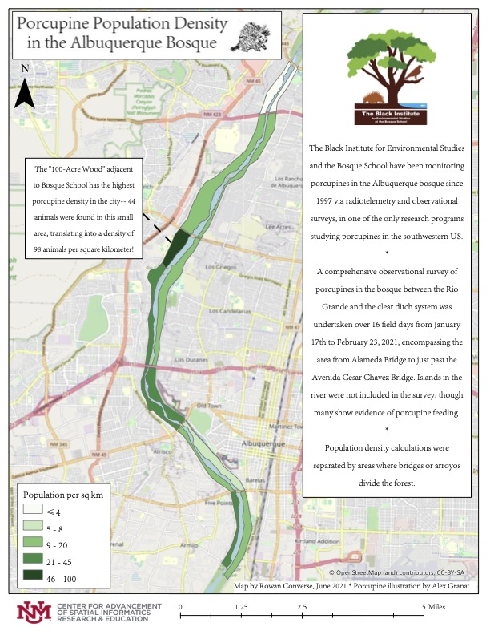

Porcupine Population Density in the Albuquerque Bosque

In February 2021, I assisted with field data collection for UNM Geography master's student Caleb Garrett's thesis research testing whether porcupines could be detected and counted using thermal UAS imagery. With the collaboration of the Bosque School, particularly Dan Shaw's Wildlife Biology class, I collected UAS thermal and RGB imagery and assisted with accompanying ground counts of porcupines in the Bosque School's "100-Acre Wood." Later, upon request, I synthesized porcupine population count data collected throughout the Albuquerque bosque (the local name for the forest along the Rio Grande) by Dan Shaw's Wildlife Biology class into a population density map for use in the classroom and other outreach. This map was awarded Map of the Month by UNM Geography in March 2022.